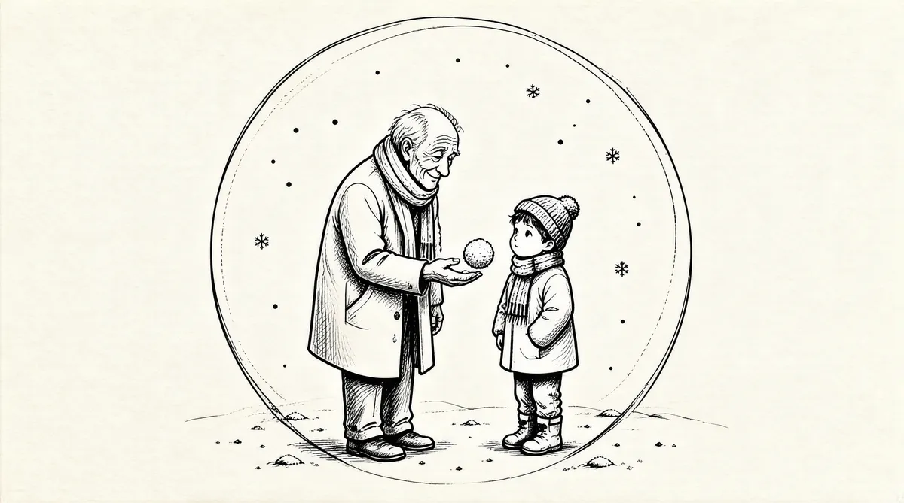

第62章 票根

苏珊去世后首先让全家感到意外的就是她留下的遗嘱，尽管其中的大部分内容并没有出乎意料。她几乎将自己持有的全部伯克希尔–哈撒韦的股票，价值30亿美元都留给了新近命名的苏珊·汤普森·巴菲特基金会，并由她的女儿管理该基金会。另外600股，当时价值5000万美元，留给了孩子们各自的基金会。
她一直对自己关心的人们非常慷慨，尽管在丈夫的影响下，她的慷慨无疑也有所节制。孩子们各自得到1000万美元。许多家庭成员以外的人也得到一定数目的资金，包括凯瑟琳·科尔和她的丈夫。去世前一年，她修改过一次遗嘱，增加了附录，由一位新任律师确认生效，附录中提出留给约翰·麦凯布800万美元，留给罗恩·帕克斯100万美元，罗恩·帕克斯事实上是多年来一直担任“STB公司”财务总监的一位朋友。1
她私下增加的遗嘱附录几乎让所有人感到吃惊。苏珊生前就一直没有把握好自己生活中的轻重缓急，最后还是让人不得其解。处处为别人着想的生活就是她留下的宝贵财富，她的真实内心世界将永远不为人知，留给人们更多自我诠释的空间。
沃伦一直深爱着妻子，将她视为自己理想中的爱人。她一直是“他和外界联系的纽带”，也是“凝聚全家的强力胶”。2苏珊去世后，沃伦每次看到她的照片都要痛哭一场。但是他没有陷入长期抑郁之中，也没有寻死觅活，苏茜曾一度认为他会因绝望而不能自拔。他确实非常忧伤，有两个月的时间，陷入深深的绝望之中，后来，和大多数人一样，他逐渐恢复正常的生活。“浴缸”记忆发挥了作用，他对苏珊的爱战胜了一切。
“父母的结合让彼此成为自己生命中最重要的一部分，”豪伊说，“毫无疑问，父亲离不开母亲，但是爸爸没有因此倒下。如果有人认为父亲会因母亲的去世而倒下，那么，在我看来他们还是不了解他。他不会被任何事情打倒。他有着自己刚强的一面，或许只是不为人知而已。他不会因自己脆弱的一面而甘拜下风。”3
刚强的一面不但让巴菲特走出痛苦，而且让他学会适应和超越。“苏珊会照顾好一切的”——这个梦幻般的设想如肥皂泡一般破灭后，沃伦开始展示出崭新的自我。时间一个月一个月地过去，他越来越坦然地接受了生命终结和人生必死的现实，以一种新的方式开始和孩子们沟通。正如他的妹妹伯蒂所言，苏珊似乎把她的力量、情感和慷慨都留给了他。沃伦的内心世界似乎在突然间开阔了许多。他开始处理过去一直由妻子负责的一些情感方面的问题，开始更多地了解孩子们的内心世界，关心他们的生活，关心他们生活中重要的事情。
苏茜很快承担起母亲生前担任的领导工作，特别是在慈善工作方面，多年来她一直潜心于慈善事业。她开始招聘人员，扩大基金会的办公室，计划从现在起增加捐赠。管理着两个基金会对她来讲是极好的机会，根本不是什么负担。
彼得在华盛顿国家广场演出《魂——七度火苗》，庆祝美国印第安人国家博物馆盛大开幕。一天，他打电话对父亲说，爸爸，我们搭好演出帐篷了！之后他意识到以前这样的电话总是打给母亲的，母亲再告诉父亲儿子的活动。直接和父亲联系感觉棒极了。4沃伦召集了一帮朋友，飞到华盛顿参加鸡尾酒会、庆祝开幕之夜。《魂——七度火苗》此次演出之前，彼得已经发行了13张专辑和唱片，但是，这一次演出让沃伦意识到自己和儿子之间有一种特别的父子关系——不仅仅是因为彼得的成功，还有就是他们各自努力融入对方生活的力量使然。
《魂——七度火苗》在费城演出的时候，取得了巴菲特可以理解的赞誉，媒体这样报道：“吉他演奏让U2的主吉他手埃奇相形见绌”，演出可以“与菲利普·葛拉斯的舞蹈表演/歌剧《屋顶上的一千架飞机》相提并论。”5然而，《魂——七度火苗》的演出成本高昂，即便票价很高，这样的巡演也是赔钱的。彼得中断了演出，开始录制新的CD《金星》，首次担任歌手，同时开始考虑《魂——七度火苗》的长期发展方向。
豪伊出版了摄影画册《边缘》和《人生织锦画》，还在第三世界国家举办摄影展和讲座。他的基金会办公室依然像十几岁男生的卧室，摆放着玩具吉普车、挖土机和十几岁时自己心爱的CB收音机，充满怀旧的风格。但是他在工作方面成熟了许多，现在分别担任林赛制造工厂和康尼格拉食品厂的董事，解雇了两位首席执行官。在投资方面，持有CCE股票和伯克希尔–哈撒韦的股票。投资伯克希尔–哈撒韦把他和父亲紧密联系在一起。10年来沃伦看着儿子一点点稳定下来，变得成熟。豪伊一直和母亲非常亲密，而且强烈渴望自己和父亲的关系也一样亲密，现在终于有机会与父亲建立他们之间特别的父子关系。为了和家人密切联系，他和德文在奥马哈买了一处房子。
苏珊去世后发生的一系列事情，深深地打动了阿斯特丽德。她失去了自己心中最亲密的朋友，还发现苏珊的生活完全是另一番景象——她从来都没有真正了解。多年来生活在幕后，遵从苏珊的意愿，遵从这段不合传统的“婚姻”，看起来也还理想，却突然发现其实都是建立在虚假基础之上的。她知道苏珊对沃伦有多么重要，也目睹了沃伦的“浴缸”记忆多次发挥作用，但是她恼火的是沃伦居然接受了这一切，她认为沃伦背叛了她、利用了她。后来，沃伦意识到她为他和苏珊的生活付出了无比巨大的代价，这也是他们这些年一直避而不谈的一个现实。他愿意承担责任，努力弥补阿斯特丽德为他们而失去的一切。渐渐地，在他从妻子去世的忧伤中一步步走出来的时候，他开始频繁带着阿斯特丽德参与自己的公众生活。
12月，作为圣诞礼物，沃伦送给所有的孙子和外孙们一大笔钱。他一直支付每个孩子的大学学费，但是以前从来没有不附加任何条件就给他们钱。他给每个人写了一封信，提出花这笔钱的建议。他要求孩子们做一些有趣的事情，而且要按时支付贷款。“即使你们要是乱花这些钱，我也不会加以评判。你们明年还会得到一笔钱。”6
巴菲特的圣诞礼物支票没有送给两个孩子——妮科尔和埃丽卡·巴菲特，彼得收养的两个女儿。苏珊喜欢妮科尔和埃丽卡。两个孩子在她的葬礼上穿着长长的套装，哭得伤心极了，仿佛两个褐色头发的小幽灵。苏珊在遗嘱中留给每一个“收养的孙女”，即妮科尔和埃丽卡，10万美元，表示“关爱”。但是，就在苏珊的葬礼结束10天之后，沃伦就对彼得讲：“我要说，我认为这两个女孩不是我的孙女。我不希望她们在我死后得到什么。”彼得觉得很是费解。“您真的要这么做吗？”他问道。父亲就是这个意思，非常坚定。苏珊在遗嘱中留给那两个孙女钱，而且表明她们和其他孙子的地位是平等的，这似乎激起了沃伦对钱的忠实守护之情。彼得没有再说什么，但是他这样推断：如果父亲的遗嘱中真的没有留给这两个孩子什么，她们永远也不会明白为什么。确实，在圣诞节，她们没有收到他送的支票，她们不知道为什么。7
沃伦和阿斯特丽德在加州马林县沙伦·奥斯伯格和大卫·史密斯夫妇家中度过新年。他、奥斯伯格、盖茨和其他几位客人尽情玩儿桥牌的时候，阿斯特丽德就去乔氏超市采购食品。11月初，巴菲特终于打消了之前的顾虑——盖茨强大的个性可能令其在伯克希尔董事会支配一切，转而开始邀请盖茨加入董事会。沙伦和比尔就巴菲特基金会面临的问题谈了许多。要在沃伦去世后每年捐赠几十亿美元，就必须对基金会进行大量调整。历史上还没有哪个基金会经历过规模浩大的成功转型，甚至从来都没有进行过这样的尝试。只有一个例外——盖茨基金会——再没有其他慈善机构拥有如此巨额的资金。
沃伦也一直在考虑这个问题。秋天，他和基金会的理事录制了问答讨论的音像材料，确保他们明白他的心愿，保证这些记录他的心愿的音像材料代代流传，就像沃尔特·安嫩伯格一样，他希望自己死后被捉弄的可能性小一点。毕竟，“男儿之城”还是捉弄了佛拉纳根神父。如果连佛拉纳根神父都得不到敬重，那沃伦·巴菲特如何保证自己不被捉弄呢？
早在2005年，奥斯伯格就“提出一些假想”，而且特意到奥马哈对巴菲特讲了。她说，既然他对盖茨非常欣赏，为什么不考虑一下在他去世后将他的资金留给盖茨基金会呢？尽管巴菲特当时没有表示什么，8其实早在苏珊去世之前，他就开始考虑至少可以留部分钱到盖茨基金会。
查理·芒格也支持这一做法。“如果最终由盖茨基金会管理那些资金，我不会感到吃惊。”苏珊去世后不久他这样说。“我一点都不会吃惊。沃伦不喜欢那种爱摆架子的人，而盖茨在他看来就不是那种类型的人，况且盖茨只有50岁，而不是74岁。”9
有很长一段时间，巴菲特认为钱留在他手里实现复利增长，要比直接捐赠出去对社会更加有益，因为这样他就有更多的钱可以回报社会。但是直到他死后才进行捐赠也意味着白王后的“明日果酱”——他一直努力避开终结、损失、死亡、放弃，所以捐赠一直在延期。多年来，他从一个偷姐姐自行车的小男孩、一个向别人兜售杠铃的小男孩、一个孩子们伸手要钱的时候永远说“不”的父亲，逐渐蜕变为一位每5年就在孩子们生日的时候送出百万美元的父亲，一个细心为女儿挑选粉红色心形钻戒的父亲。但是他在处理钱的问题上还是有一些棘手，例如苏珊的遗嘱就让他有些不满。无论如何，一个巨大的思想转变就是他已经开始考虑是否要在今天兑现明日果酱。
然而，这并不代表他可以轻松面对时间的流逝。苏珊去世一年后，巴菲特发现自己还是对即将到来的又一个生日备感吃惊。他真的走过大半个世纪的漫长岁月，进入75岁了吗？他还是表示难以置信，而且喜欢举一些事例说明自己身体健康，一定会长寿：他的母亲92岁去世，凯蒂婶婶97岁去世，沃尔特·施洛斯90岁了还在打网球，当然还有他的偶像B夫人。
他的75岁生日聚会在沙伦和大卫夫妇家里举办，阿斯特丽德、比尔·盖茨、妹妹伯蒂参加了生日聚会。生日蛋糕是用白色巧克力做成的100美元钞票的样式。星期六早上，史密斯安排巴菲特和9岁的美籍华裔乒乓球选手邢延华对战，摄像机记录了小女孩打败他的情景。第二天早上激烈的桥牌锦标赛后，奥斯伯格和史密斯请来的一位艺术家教巴菲特和盖茨画山水画，为的是让他们娱乐一下。巴菲特大胆尝试，在颜料盒中用力挥动着毛刷笔，油画不同于乒乓球，没有节奏性和重复性，所以游戏进行得非常轻松。他完成了一幅风景油画作品，上面画着像棒棒糖一样的树木。就在此时，前一天的乒乓球比赛让他们想到一个主意。为什么不在股东大会的短片中增加邢延华痛战巴菲特的录像呢，短片内容可是一直在不断被丰富啊。
2003年之前，巴菲特期待被关注的愿望通过每年接受几次采访和股东大会实现。他和媒体的合作一直都非常小心、讲究战略（他并不是随时配合媒体的采访报道）。但是大概从苏珊生病开始，不知什么原因，他总是希望媒体关注，特别是喜欢参加电视节目的录制，仿佛有瘾一般。采访越来越频繁，他还参加了纪录片的制作，和查理·罗斯一起录制了很长时间的谈话，成为CNBC的常客，一些朋友开始不解地问他为什么这么做。
渴望自身得到关注的巴菲特和照旧密切关注伯克希尔–哈撒韦的巴菲特形成了鲜明的对比。看着他瞬间从一个状态转入另一个状态，让人眼花缭乱。邀请比尔·盖茨加入董事会后，他开通了“检举热线”，保证每一位员工都可以汇报公司的错误决策。考虑到总有一天，董事会必须在他缺席的情况下做出决策，他迈出了重要的一步——主张召开董事会的时候他不出席。但是他依然像年轻的时候那样关注着投资。“9·11”事件之后美联储大力调低利率，在市场出现泡沫之前稳步挽回损失。巴菲特在2004年致股东的信中写道：“我希望完成几宗万亿美元的并购，在我们目前的收入基础上再增加大笔新的收入来源。但我还是决定放弃。还有就是我发现可以选择的优良证券寥寥无几。因此，伯克希尔去年只有430亿美元约当现金，情况不容乐观。”第二年，伯克希尔出资收购了以下4家小型公司——医疗保护保险和应用承保两家保险公司；娱乐休闲汽车制造商森林之河以及一家针对企业发布公关资源的公司美国商业资讯——还有一宗大型并购，即中美洲能源对一家大型发电厂PacifiCorp的并购。中美洲能源并没有按照巴菲特的期望进行大量并购，然而并购PacifiCorp发电厂显然是明智之举。油价持续上涨，中美洲能源在替代能源方面拥有不小的优势。其首席执行官大卫·索科尔是人们公认的巴菲特的继承人之一，尽管巴菲特本人一直在继承人确定方面守口如瓶。
巴菲特还借此再次提到他依然不看好美元，认为美元一定会走低。他的第一篇相关文章发表后，美元就开始走高，财经新闻现在大力批判他的观点。他通过购买美国以外的股票降低自己的投资风险，没有什么可以改变他的观点。而且他又一次谴责公司高管薪酬过高。关于金融衍生产品，巴菲特现在每年都要提到的一个话题，在致股东的信中他这样描述：
很久以前马克·吐温就说过：“拖着猫尾巴走的人会得到无比深刻的教训。”……考虑到两方面的原因，我每年都要提到我们在金融衍生产品方面的经验教训。一方面是我们自己的一些不愉快的经历。我和查理都知道通用再保险公司当时推出衍生产品是一个错误，而且告诉管理人员我们希望终止这些产品的相关业务。我有责任确保监督他们终止衍生产品，然而，我当时没有直接处理这一问题，导致后来用了几年的时间才将那项业务脱手。那是一段痛苦的挣扎，没有什么现实的解决方案可以让我们摆脱关系到几十年的如迷宫般错综复杂的债务。我们的债务尤其让人担心，因为无法预测债务猛然暴涨的风险。再者，如果发生严重问题，我们知道可能会连带引起金融市场的其他问题。
“我没有在事情恶化之前选择退出，同时还增加了金融衍生产品的交易量。”巴菲特指的是他聘用了一位经理，暂时允许金融衍生业务扩展的时期。后来证明，其中的一些交易耗费许多成本才最终了结。
都是我优柔寡断惹的祸。（查理说那就是“吮拇指”。）当问题出现的时候，不管是个人生活中的问题还是经营公司中的问题，都要当机立断。
我之所以经常提及我们在这方面遇到的问题，另一方面的原因就是希望我们的经验教训可以为经理、审计和监管机构的工作提供借鉴。在某种意义上，我们就是商业煤矿中的金丝雀，自己气绝身亡的代价是给别人进行提醒警告……通用再保险公司在金融衍生品领域只有很小的份额，本来准备在良性市场环境下清算流动资金，始终因为没有财务压力和其他方面的压力而导致清算工作未及时有效地进行。我们过去一直采用传统会计标准，非常保守。此外，我们没有出现不良会计行为。
对于其他公司来讲以后的情况就不仅如此了。我们可以想象一下，在混乱的市场环境下，压力无处不在，一家公司或更多公司（问题总会扩散）面临着高于我们数倍的流动资金，进行清算是一种怎样的情形。考虑新奥尔良的防洪大坝是否结实，进行加固工作的时机是在“卡特里娜”飓风袭来之前。10
然而，人们还是认为金融衍生产品可以降低风险。在低息贷款和金融衍生产品日渐增多的市场环境下，低利率和抵押贷款“证券化”演变而来的金融衍生产品将在2006年导致房市高峰。据估计，在不到10年的时间中，全球总杠杆（债务）将翻两番。11巴菲特偶尔会担心的问题就是，可能再也不会出现像20世纪70年代那样可以胜券在握的投资环境。但是他从来都没有停止探索，从来都没有停止钻研。
2004年的一天，他从经纪人手里接过一本厚厚的书，有几本电话号码簿订起来那么厚，内容是韩国股票的详细列表。他一直在研究全球经济，寻找一个被忽略、被低估的国家和市场。最后，他锁定了韩国，开始一宿接一宿地翻阅那本大部头的书，研究一列一列的数字，一页一页耐心地钻研。但是那些数字和术语让人迷惑不解，他发现还是需要学习一套不同商业文化中的商业语言，所以又开始阅读另一本书，了解关于韩国会计领域的一切重要知识，这样就不会轻易被那些数字迷惑。
掌握了基本内容后，他开始了筛选工作。仿佛回到了过去在格雷厄姆－纽曼合伙企业工作时的情景，穿着自己心爱的灰色夹克坐在自动收录机后面。他从几百页的数字中挑出了一些重要的数字，研究其中的关联性，很快就从几千只股票中精选出一些可用作比对选择的股票；经过进一步在黄线拍纸簿上标记研究，最终确定出为数不多的几只可选股票——筛选工作就像翻阅《穆迪手册》那样，从废物中搜索宝石。
精简出来的列表非常简练，一页标准打印纸就可以全部列出。和一位客人坐下后，他拿出了那张最多列着二三十家公司的纸，上面只有少数几家大公司——属于全球大公司——但多数都是很小的公司。
看，这就是我列出来的股票，报价都是韩元。打开韩国股票交易所的网站，可以看到这些股票的交易数字，而不是订单符号，除优先股外这些股票交易结算都是零，这是在点击5的情况下，如果持有次级优先股，不要点击6，点击7。每天晚上特定时间打开那个网站都可以查询一些问题，而且分别显示当日交易买进最多和卖出最多的5家经纪公司。还需要在韩国开通一个特殊的银行账号。这对我来说不是一件轻而易举的事情，我在一点点学习。
对我来说这就像认识一个女孩子。
这些公司都非常不错，而股票价格依然很低。股票比5年前低，但是业务却更有价值了。这些公司中的一半都有一个听起来像色情电影一样诱惑人的名字。他们生产基础产品，如钢铁、水泥、面粉和电力，都是人们10年后依然要购买的东西。这些公司在韩国占有很大的市场份额，这一点是不会变的，其中的一些公司向中国和日本出口产品。然而，出于一些原因，这些公司没有得到足够的重视。看，这家面粉公司拥有的现金超过其市场份额，销售额是收益的3倍。我不会买许多，只是持有少数股票。还有一家，是乳制品行业。我个人的投资组合中可能会全部都是韩国证券。
其实我不是外币方面的专家，但是我觉得现在持有以韩元为单位的证券是不错的选择。
主要风险，也是股票之所以便宜的原因就是朝鲜。朝鲜是一个真正的威胁。如果朝鲜入侵韩国，全世界就会陷入灾难之中。中国、日本、整个亚洲都将陷入战争，结果简直不堪设想。朝鲜很有可能拥有核武器。我认为朝鲜就是全世界最危险的国家。但是我可以保证世界其他国家，包括中国和日本在内，都不会在短期内让局势恶化到朝鲜利用核武器攻击韩国的地步。
他找到了新的游戏，新的钻研对象。他希望了解更多，坚持继续寻找机会，就像小时候弯腰在赛马场捡中奖的票根一样满腔热情。
2005年12月，在哈佛商学院的一次座谈中，有人问他希望巴菲特基金会对社会有怎样的影响，该基金会将是全球资金实力最为雄厚的基金会。巴菲特回答说，他觉得自己继续保持基金会的复利增长不是在对社会作贡献，所以他现在考虑更多的是要把这些钱捐赠出去。
没有人对此做出评价，没有人发现巴菲特的目标出现了大转变。
就在那次讲座中，他后来谈到了盖茨基金会。他说比尔和梅琳达·盖茨是他最佩服的两位慈善家。他们的基金会是他见过的运作最合理、基金会政策落实得最有效的基金会。他喜欢他们不希望以慈善宣传自己、不希望以自己的名字命名什么大厦的风格。
2006年年初，他的想法开始具体化。他对孩子们各自的基金会工作非常满意，苏珊曾经带给他的安全感不会再有了。这样的情感力量超越了意识水平。他曾经决定让她负责管理他留下的资金，却从来没有理智或客观地考虑过她是否适合做一位慈善家。随着他们的夫妻关系在几十年岁月长河中不断强化，他确实非常信任妻子的判断力和智慧，也习惯了对她无比信任。现在她离开了，一切都不同了。在汤姆·墨菲女儿的婚礼上，他对墨菲提到了自己内心的变化，而且突如其来地告诉沙伦·奥斯伯格自己的新想法。他准备早些把钱捐赠出去，但是依然只是一个想法，还没有形成具体的计划。
计划是复杂的，细节方面需要几个月的时间来完善。第二年春天，他开始直接与基金会相关的工作人员谈起自己的想法。“振作起来，”他和卡罗尔·卢米斯坐下来谈的时候这样说，卡罗尔·卢米斯是巴菲特基金会的一位理事。“那个消息确实让人震惊。”她写道。12
“我遇到了很多问题，”在提到他开始通过谈话告诉人们这个决定的时候他这样说，“而且有些人一听到这个计划就觉得疑惑不安，这是一个巨大的转变，和人们一直以来所期待的基金会模式完全不同。”13另一方面，他的姐姐和妹妹知道这个决定后随即投以极大的热情。“这是你那次假装患了哮喘，让人们从弗雷德里克斯堡把你送回家以来想出的又一个好主意。”后来伯蒂这样写道。14多丽丝认为这是一个明智的决定；通过自己的阳光女士基金会，她知道即使合理捐赠几百万美元都需要投入大量的工作。15
2006年6月26日，巴菲特宣布在未来几年中逐步向其他基金会捐赠伯克希尔–哈撒韦股票的85%——当时共计370亿美元。慈善事业首次出现如此规模的捐赠。其中5/6将捐赠给全球最大的基金会比尔和梅琳达·盖茨基金会，为了世界更加美好，两位财富巨头将进行历史性的联手。16他要求自己捐赠的资金必须通过各基金会造福于人类，而不是供各基金会维系自身的长期生存之需。全家一直都在期待他们的家庭基金会有朝一日成为全世界最大的基金会，而父亲突然之间决定的大笔捐赠让孩子们颇为吃惊，为了安慰孩子们，巴菲特决定将余下的资金，共计价值约60亿美元，送给孩子们各自的基金会，每个基金会分别得到10亿美元，苏珊·汤普森·巴菲特基金会得到30亿美元。孩子们都没有想到各自的基金会可以达到这样的规模，特别是在父亲依然健在的时候。捐赠当日，盖茨基金会得到的第一年的捐赠是15亿美元，孩子们各自的基金会得到5000万美元，苏珊·汤普森·巴菲特基金会得到1.5亿美元。根据伯克希尔–哈撒韦的股票价格，每年的捐赠数额会有所不同。实际情况是，每年的捐赠数额都会增加，增加许多。17
这位当时的全球第二富翁在进行捐赠的同时没有考虑为自己留下任何名利。他一生都在孜孜不倦地“滚雪球”，似乎是对自己人生的一种丰富；然而却没有建立什么沃伦·巴菲特基金会、巴菲特医院辅楼，没有一项大学奖学金或一座大楼冠以他的名字。进行捐赠的同时没有用自己的名字命名任何项目，没有对资金去向辅以个人意向——而是将资金放到了另一家基金会的金库中，而另一家基金会正是他权衡竞争实力和工作效率精心挑选的一家基金会；没有选择创造自己的慈善王国——彻底颠覆了传统的捐赠模式。此前没有哪位巨款捐赠人做出这样的壮举。“这是全球慈善史上历史性的一刻，”洛克菲勒慈善顾问机构的道格·鲍尔如是说，“他为别人进行慈善捐赠树立了榜样，推出了新的标准。”18
沃伦·巴菲特此举既令人惊讶又在预料之中。一位不俗的思想者、一位解决问题的能手，勇敢挑战慈善领域的浪费和夸大现象。盖茨基金会得到了资金，但是必须一笔一笔地花出去——而且速度要快。他的决定非同寻常、出于自愿，有言传身教之功——自然引来极大关注。然而，在另一方面，这是典型的巴菲特式的万无一失之举。他把自己的大部分资金用作捐赠让世界震惊，而在他实际支付之前自己依然持有这些资金。无论如何，这一次他选择了放手，改变了自己一生对钱的坚守——开始数十亿数十亿地大笔捐赠。这位自己存硬币的衣橱连家人都不准碰一下的小男孩，历经蜕变，现在终于可以自如地将数百亿美元交给别人打理了。
在宣布捐赠的发言中，巴菲特这样说：
在50年前，我与几位家人和朋友坐在一起，他们把10.5万美元以合伙的方式交到我的手里。他们断定我会比他们自己在积累财富方面做得更好。
50年后的今天，我坐下来考虑谁在分散财富方面可以比我自己做得更好。这确实非常合理。人们总是没有时间坐下来想这个问题，总是说谁可以经手我的钱？而且总是愿意把钱交给某位专家。但是，他们似乎想都没想要在慈善方面做点什么。他们选择自己生意上的亲密朋友或其他人在自己离开后管理他们的财富，而他们本人甚至不知道这些钱用在哪里。
所以，我是幸运的，慈善工作要比经营管理复杂得多。你们负责处理的将是过去智慧而富有的人们绞尽脑汁而难得其解的重大问题。因此，寻找慈善方面的人才要比寻找投资方面的人才更加重要，相比之下投资没有那么费力。
我非常幸运，生于20世纪30年代的美国，出生的那天就中了彩票，有优秀的父母，得到了良好的教育，在这个特别的社会中我得到了特别的恩赐。如果我出生得更早，或者出生在其他国家，就不会得到这样的恩赐。但是在市场体系下，资本分配至关重要，不同于其他体系下的资本分配。
我一直认为钱就是一把票根，应该投放到社会中去。我不支持朝代财富，特别在我们的资金可以有助于60亿比我们贫穷的人们之时。而且我的妻子支持这样的观点。
显然比尔·盖茨就有着明确的目标，他全身心地投入到改善全人类生活的伟大工作中，不分性别、宗教、种族或地域。他为人类做出了杰出的贡献。所以我在决定资金去向的时候就容易多了。
盖茨基金会和巴菲特有着同样的信念：“相信每个生命都有平等的价值”，致力于在全球健康和教育领域“减少不平等，改善人类生活”。盖茨夫妇将自己当作“号召人”，号召人们群策群力，彻底解决整个社会存在的重大问题。19
尽管苏珊去世后，巴菲特改变了许多、完善了许多，但是在某些方面他依然如故。管理着巴菲特基金会的艾伦·格林伯格发现自己将接管只有60亿美元的基金会，而不是他一直期待的450亿美元规模的基金会，而且不再是巴菲特管理下的基金会，而是他的新任老板、前妻苏茜代管的基金会。沃伦没有勇气亲自告诉格林伯格他的计划，没有勇气告诉他需要考虑未来如何运作一个比预期规模小很多的基金会。苏茜必须让艾伦相信这绝不是因为他的工作表现而作的决定。开始艾伦非常生气，说自己不相信这是事实，但后来他还是接受了这个变化，愿意继续接管依然列属全球十大慈善组织的基金会，最终坦然地接受了变化。
所有相关的工作人员都有充分的理由认真工作。尽管巴菲特计划捐赠大笔资金，但是这些资金是逐年捐赠的。没有用作捐赠的股票价值估计在当时就已经超过60亿美元，他还有许多资本可在未来用作捐赠。
巴菲特的捐赠计划片刻间带来了声势浩大的影响。中国香港演员成龙宣布捐赠自己的一半财产。亚洲首富李嘉诚承诺将190亿美元资产的1/3留给自己的基金会。墨西哥通信垄断巨头卡洛斯·斯利姆曾嘲笑巴菲特和盖茨的慈善之举，但是，几个月后还是宣布他自己也将开始慈善捐赠。盖茨夫妇在他们的基金会设立了一个新的部门，专门接待有意向基金会捐赠的人们——比如一个7岁的小女孩要向盖茨基金会捐赠自己攒下的35美元。
经过资金充实的盖茨基金会对整个慈善事业产生了结构性的影响。其“全部资产捐赠法”，与巴菲特的集中理念非常相似——还有他的投资风格——集中处理仔细挑选出来的几个重大问题。完全不同于其他许多大型基金会和社区基金，那些基金会总部管事的经理人身边围着许多前来请求帮助的人们，他们一边悠闲地掰着手指头念叨“掐掐算算，鸡毛乱转……”一边一点一点地进行少量资金发放。2006年年末，包括洛克菲勒基金会在内的一些慈善组织开始修订相关政策，开始逐步接受盖茨夫妇的做法。20
在宣布将大量资金投放到盖茨基金会后，巴菲特办公室一下子收到了3000封需要帮助的人们发来的邮件，每天都有大量的邮件寄来。他们没有保险、背负着沉重的医疗负担、工伤没有得到救治、住房被收回。他们的孩子患有严重疾病，需要特别救治，导致他们失去了偿还抵押贷款的能力。或者是男朋友让她们怀孕后，骗走了钱，她们不得不代之偿还债务。他们没有赢得“卵巢彩票”。沃伦把这些信转交给姐姐多丽丝。10年来，多丽丝的阳光女士基金会得益于父亲霍华德·巴菲特的信托收益，帮助了几千名家庭暴力的受害者、生活贫困的人们和面临危机的家庭。他把那些信件转交给姐姐多丽丝的时候，还拿出了500万美元资助她的工作。
她请了几位50岁以上的女士帮助筛选来信，他们选择的救助对象是“非常不幸的人们，而不是做出错误选择的人们”，而且选择那些要求少量资金帮助走过不幸的人们。他们经常为那些嗜赌、深陷信用卡债务和不愿工作的人们提供咨询建议，但是只要人们有其他办法解决困难，他们就不选择资金救助。多丽丝从来都不是给钱了事的类型，“我不希望自己只是付钱给人们。”她说。她要求得到资助的人们写感谢信。她的慈善之举同时教给人们感恩和自尊。21
巴菲特继续坚持大额捐赠。他每年都给泰德·特纳的核威胁倡议(NTI)组织捐赠500万美元，在他看来NTI组织是美国致力于全球核威胁事业的最重要的组织，他愿意增加捐赠。前参议员萨姆·纳恩负责管理NTI，曾提出一项核燃料库建议，允许各国转化核浓缩项目，但不进行项目开发，以降低核扩散的可能性。巴菲特认为这一观点有极大的优势，只要该组织可以筹集一定资金，他就愿意捐赠5000万美元。他愿意大额资助任何反对使用核武器的项目，在他看来似乎这样做可以解决核威胁的现实问题。
巴菲特还资助前总统吉米·卡特成立的卡特中心。卡特不是一位受人爱戴的总统，但是在卸任、退回到98层的时候他继续努力向前看，为人们树立了榜样，在全球健康、民主和人权方面做出杰出工作，赢得诺贝尔和平奖。“欢迎您参加我们于2007年2月6日至8日在加纳开展的麦地那龙线虫病防治工作。”卡特接到捐赠后热心回信邀请。22巴菲特把卡特当作朋友，但是没有任何人——包括豪伊、苏茜乃至比尔——能让他坐飞机到遥远的非洲看什么麦地那龙线虫。23
这样一来，巴菲特的非洲之行第三次未果。许多事情依然没有改变，但是随着时间的推移，其他方面还是有一些改变的。
阿斯特丽德现在是沃伦在奥马哈之外参加各类活动的正式伴侣。她还是原来的样子——同样言辞直率、谦逊质朴——但是她的世界以惊人的速度扩展。她现在经常接触比尔·盖茨夫妇。2005年秋天，她和沃伦飞到大溪地参加比尔·盖茨的50岁生日聚会，聚会在保罗·艾伦豪华的“章鱼号”游艇上举办。“章鱼号”是当时全球最大的游艇，是全球富翁榜排行第六的亿万富翁儿时的梦想，游艇上配备一个影院、一个音像录制室、两架直升机、一只63英尺的补给船和一艘小型潜艇，潜艇可容纳8个人在海底生活两周。聚会期间，她和沃伦住在保罗·艾伦母亲的特等舱里，是客厅带大壁橱和图书室的大套房。“哦，我的天哪，”阿斯特丽德说，“真不敢相信。这可能是我此生第一次也是最后一次体验如此豪华的生活了。”
“这儿比家里强。”沃伦这样对她说。回家的飞机上他一直在谈游艇上的桥牌比赛。24
苏珊去世两年后，在巴菲特76岁生日的时候，他和阿斯特丽德在苏茜家举办了简单的婚礼，没有邀请客人，只有家人出席。阿斯特丽德身穿天蓝色的上衣和白色裤子，沃伦穿着西服。当他把一枚大大的白金婚戒戴到她的无名指上时，她激动得泪流满面。接着，他们去波仙珠宝店旁边的北梭鱼烧烤店吃晚餐。随后两人飞到旧金山参加婚礼聚会，在沙伦·奥斯伯格和大卫·史密斯夫妇家中享用传统结婚蛋糕。盖茨夫妇也参加了他们的婚礼庆祝。
品味非凡、成就不俗的沃伦·巴菲特过着简单的生活，他向来喜欢简单朴实的生活——一个妻子、一辆车子、一座多年没有翻新装修的房子、经营一家公司，和家人在一起的时间越来越多。25
巴菲特一直都说参天大树只是一个比喻，但小树苗在茁壮成长。
谁来接替他的工作一直是股东们关心的问题。
他有时候开玩笑说伯克希尔将由一位每周工作5天的人来接管，或者由集中了本杰明·富兰克林智慧的查理的半身像，或一个纸板像接管。他还喜欢开玩笑说自己死后也要控制公司：“嗯，我的第二手计划就是想办法看看如何通过幽灵管理公司。”没有人相信他的玩笑。还有些时候，他会这样告诉人们：“我的灵魂已完全融入了伯克希尔。”在伯克希尔工作的人们和投资伯克希尔的人们都领会了巴菲特的精神。他是不可替代的，那么那些资金会怎么样呢？他去世后随即面临的一个问题就是，那些资金是分红还是大量进行股份再购入。他的继任者必须做出一些改变——伯克希尔的模式部分需要保留，部分应该变革。总部员工——少得出名——可能会随着外包工作的回归而增加。同时，人们还是认为所有的继任候选人都是在伯克希尔–哈撒韦工作的。但也未必如此。其实，董事会也会考虑在时机成熟的时候选择外部候选人接任。
巴菲特曾经说过，如果他去世30年后伯克希尔–哈撒韦依然吸引着现在的股东，将是他最高兴的事情。他正是这样安排的。他创建的一流机构可以永远运转，在他身后代代相传、生生不息。然而，做到这一切本身就是一项不俗的成就；他是这个机构的灵魂，无论如何，没有他就是一个空白。只有巴菲特可以把一切安排得完美无瑕，就像他自己的人生那样。
历史上还没有哪个公司的股东对公司首席执行官的眷恋之情胜过伯克希尔–哈撒韦的股东对巴菲特的眷恋之情。没有人像伯克希尔–哈撒韦的股东那样认为公司首席执行官就是自己的良师益友。富可敌国的他感动了无数人，许多人都觉得他是自己的故交，尽管彼此不曾谋面。但是，让人十分奇怪的就是不管巴菲特收到多少粉丝来信，不管曾经多少次亲笔签名，他从来不真正了解自己有多么受人崇拜。阅读每一封来信、每一次亲笔签名都让他兴奋不已，仿佛还是第一次。
2007年7月，道琼斯指数创下14000点的新高，接着开始下跌。早已达到高峰的房价开始持续走低，和每一次泡沫高峰时期一样，部分原因是美联储开始提高利率所致。重新贷款困难，房主无法偿还抵押贷款，形势愈演愈烈，越来越多的人还不起贷款，出现了史无前例的贷款拖欠。
8月，出现了全球追加保证金通知现象。8个月之后，金融界爆发历史性的信用危机。大萧条以来首次出现如此严重的信用扣押。1907年的金融恐慌过后，年迈的J·P·摩根本人出面干预缓解恐慌以来，再没有出现像2008年这样的金融市场非正式干预。
危机间歇性地不断深化，往往是几周乃至几个月的平静之后再次大规模爆发，受害者犹如海滩上散落的贝壳一样无处不在。事实证明，金融衍生产品确实导致风险扩散——银行报告损失数十亿美元；澳大利亚一家医院管理公司的投资组合损失1/4；8个挪威商业中心区推测认为安全的住房抵押证券都损失了百万美元；估计各行各业的综合损失都达几百亿美元，有的甚至达到一万亿美元。像长期资本管理公司那样的优先投注全部选错了方向。人们假想出一个理性而“有效”的市场，认为头脑冷静、精于计算的买方可以阻止降价。
他们声称所有这些衍生产品都可以促进世界安全，分散风险，但是不会分散人们对特定的刺激做出的反应所引发的风险。现在，你完全可以认为只持有5个运转良好的银行的信用就非常不错，完全胜过持有全球范围内数千个银行的信用，这些银行可能在同时出现问题。
美联储再次降低利率，与其他中央银行合作激活其他金融应急资源。26然而，信用卡危机还在扩散。
借贷现象出现蔓延。道琼斯指数下跌17%，从10月份的水平下降到11740点。每次公告有公司减价出售、破产或倒闭，谣言和恐慌就开始扩散。越来越多的人开始悄悄出售房产，却找不到买方，越来越多的贷方拼命收回贷款。
2008年3月13日星期四，又一轮危机爆发，这一次是投资银行中最弱的贝尔斯登，贷方开始拒绝续贷。仿佛重新上演17年前所罗门公司的一幕，第二天星期五，贝尔斯登险些因为融资短缺而倒闭。但是这一次美联储迈出了史无前例的一步，居然拿出300亿美元担保贝尔斯登的债务——美联储第一次花钱帮助一家投资银行走出困境。星期五下午，贝尔斯登收盘价为30美元。那天晚上巴菲特仔细分析了形势。长期资本管理公司此举花钱保释贝尔斯登只是一个开头彩排——规模还很小——此时此刻。
随之出现的是恐慌迅速扩散——没有人必须持有贝尔斯登的账户，没有人必须贷款给他们。这正是我在所罗门公司所做的事情，其实与电子银行挤兑的做法相差无几。银行不能容忍挤兑。美联储此前没有花钱帮助投资银行走出困境，那正是我1991年在所罗门公司所做的事情。如果所罗门公司的情况继续，谁知道会有怎样的多米诺骨牌效应。至于美联储该怎么做，我没有什么正确的答案。市场的某些方面几近瘫痪。人们不希望灾难蔓延到本应该很好的机构；如果贝尔斯登倒闭，两分钟后人们就开始担心雷曼倒闭，再过两分钟就开始担心美林倒闭，人们的担忧会这样无限扩散。
巴菲特非常理智地分析了美联储做出风险选择的原因。确实没有别的办法，要么就是眼睁睁地看着金融灾难爆发，要么就是促进美元贬值，提高通货膨胀。
如果整个系统充斥着大量的流动资金，一切就会立即结束，但后患无穷。如果流动资金过量就会立即引发严重的通货膨胀，发生许多意料之外的情况，导致经济惨败，那不是我的选择，但是如果必须做出抉择——其他人都会说倒退可能只是短期的，不会多么严重，但我要说，这是长期而严重的。
人们一定不愿意面临这样的情况：第二天一觉醒来你的钱袋子居然跑到了陌生人手中。我花了很长时间考虑这个问题，确实不希望自己翌日清晨必须付10亿美元。嗯，10亿我可以接受，但是可能会是更大数目，一切都是不确定的。人们必须考虑到过去从来都没有发生过的一些情况，而且总是希望手头可以有大量资金。
整个周末监管机构和银行都在不停地辛苦工作着，就像他们早些年处理所罗门公司的情况那样。然而，这一次显然是银行的失败会引起全球金融体系的全面瘫痪。贝尔斯登是否咎由自取已不是问题所在。就在东京股市周一开盘之前，美联储宣布其出于大局考虑，支持摩根大通以很低的价格收购投资银行贝尔斯登。巴菲特曾经考虑收购贝尔斯登，但是他认为其中有太多不设限的风险因素存在。
就在宣布贝尔斯登得到保释的当天，美联储为了平息恐慌，防止雷曼兄弟发生同样的情况，确实开始大量发放流动资金：允许最大的投资银行通过“贴现窗口”借款2000亿美元，将抵押贷款证券作为担保证券。使用贴现窗口过去只是商业银行的一种特权，从来没有在投资银行实施，通过贴现窗口可以避免在申报和资本监管方面被认为是一种借款补偿。然而，恐慌没有平息；政府这样的做法没有终了。政府开始将不良贷款认做抵押品；开始推出各种史无前例的做法努力取消对抵押贷款市场的管制，帮助陷入困境的贷方。市场权威人士称美联储救助贝尔斯登、对商业银行的投资是防止危机蔓延的唯一办法，但是也对这些做法是否可以加速经济恢复提出质疑，或许只是延缓阵痛，诱发下一次泡沫。经历7个月的时间考验，事实证明金融灾难日渐显露，美元价值——一段时间以来持续贬值——依然一路下滑。同时，油价开始上扬：到2008年7月，现货原油交易价格达到每桶144美元。
“不可思议的年代。世界完全不同了，没有人知道会发生什么，但是我和查理不看好未来趋势，没有人乐观预期。”减债是一个痛苦的过程，银行、对冲基金、金融服务机构、市政当局、建筑和旅游行业、消费者，确切说是整个经济开始倒退——快速而痛苦，抑或慢速而痛苦——低息贷款之毒浸入不浅。资产回报可能长期低于标准水平——查理·芒格称之为“4%回报的环境”。芒格说要当心各类骗子，他们可能风行于市，因为将4%的回报提高到16%，最轻松的办法就是谎言。
2008年春天一片混乱，巴菲特坐下来认真考虑了自己近60年的职业生涯中未曾改变的价值和风险。总有人说规则变了，但是他说只是短期来看如此而已。
巴菲特仿佛回到了童年，又开始弯腰捡“烟蒂”。他不会幸灾乐祸，但是在投资生涯中，每个人都有自己侧重的一面。这样的时候就是他最能施展才华的时候，做着自己喜欢的事情，展示一个真实的自我。
我们开始售出一些信用违约互换(针对存在破产风险的公司推出的保险），当时的情况是这些存在破产风险的公司的股票价格非常之低。我坐在那里，膝上放着当天的日报《债券买家》。有谁会认为我每天都读《债券买家》吗？不，订阅一年的《债券买家》高达2400美元，我愿意选择按日订阅。我们把这些出价归入免税货币市场基金的失败拍卖和其他拍卖利率债券，一直都在想办法处理。同样的基金同一天同一时间在同一家交易商的利率分别是5.4%和8.2%，简直不可思议，但事实就是这样，而且优先贷款有极大优势。没有什么理由说明为何以820点交易，但是我们出价820就可能取得一笔基金，然而就在同时别人却以540点进行同样一笔基金的交易。如果有人告诉我10周前事情就是这样，我会说这和我成为男性脱衣舞者一样荒唐。我们投入了40亿美元，这可能是我一生中做得最荒唐的事情。如果说这就是有效的市场，那么字典必须重新定义“有效”一词。
是谁说免税货币市场基金可以成为“烟蒂”呢？
但是信用市场中即刻出现的所谓可行的机会更让人不可思议。最大的机会居然是抵押贷款。但是我不明白，尽管我一直在努力了解这一切。如果我认为取得了足够的安全边际，我可以去做。
不，股票是应该长期持有的东西。生产率提高，股价随之上涨。只有少数事情可以容忍错误。在错误的时间买进或卖出或者付高价，都无异于自寻短见。避开这两方面的最好办法就是购买低廉的指数基金，而且要长期购买。别人恐慌的时候贪婪，别人贪婪的时候恐慌，但切勿企图智取市场。
如果长期来讲，美国社会各行各业都会好转，那又为何费力挑选投资对象，还认为自己干得好呢？只有少数人应该成为积极的投资者。
如果说沃伦·巴菲特的人生向我们展示了什么教训，这就是其中的事实。
尽管参天大树只是一个比喻，但巴菲特认为自己可以帮助小树苗生根发芽。他从来没有不关注商业，但是在考虑如何有意义地度过自己的余生时，他又一次急切地希望给人们以谆谆告诫。一段时间以来他一直在美国大学生中间发表演讲，亲自到各学校，或者欢迎大学生到奥马哈来。他喜欢对学生们提出忠告，因为他们没有形成顽固不化的习惯思维，依然年轻，有机会实践他的忠告。
我很早就开始滚雪球了，如果起步晚了10年，就完全没有现在这样站在山顶看风景的优势。所以，我建议学生们要蓄势待发——这样做其实非常简单，但结果完全胜过起步晚拼命追赶的情形，而且信用卡确实会导致他们落在后面。
早在2002年，强烈的紧迫感驱使之下，他就开始频繁地为大学生演讲。所到大学包括西北部的麻省理工学院、艾奥瓦大学、内布拉斯加大学威斯里安分校、芝加哥大学、韦恩州立大学、达特茅斯学院、印第安纳大学、密歇根大学、圣母大学、哥伦比亚大学、耶鲁大学、休斯敦大学、哈佛大学、拉德克利夫学院、密苏里大学、田纳西大学、加州大学伯克利分校、莱斯大学、斯坦福大学、艾奥瓦州立大学、犹他大学、得州农工大学。他的多数发言表示，致富不是人生的终极目标。然而有意思的是，正是他的财富和名声吸引着人们关注他的发言。到奥马哈拜访的大学生越来越多。
2008年，他首次荣膺全球首富。那时候，来自亚洲、拉丁美洲的学生，两三个学校一组纷纷前往奥马哈，有时候一次到达人数超过200人，有时候一个月有好几天他都要接待学生们。
前来朝圣这位奥马哈圣人的学生都得到了盛情款待（只是巴菲特现在不必凌晨4点30分亲自到他们所在的酒店，把供学生们翻阅的厚厚的年度报告送到前台了。互联网结束了他的这项使命）。大家在B夫人的内布拉斯加家具城参观，在波仙珠宝店的柜台前流连忘返。巴菲特在办公室和学生们见面。他已经有一段时间不再穿那套灰西服配高领衬衣的正装了，穿着休闲装看起来非常轻松。学生们的问题往往不限于商业领域。人生的目标是什么？一些人希望他回答这样的问题。他回答这个问题的时候和回答商业领域的问题一样——以精密的数学方式描述。
正如苏珊手术后住院康复期间，他对佐治亚理工学院的学生们所讲的：“人生的目标就是，在你期望得到关爱的人中间最大限度地争取自己受人爱戴。”
理想的社会应该是什么样子呢？他讲述了“卵巢彩票”理论。我如何找到合适的另一半呢？他说结婚。（他不谈金钱。）我如何判断正误呢？按照内部记分卡。我的职业应该怎么规划呢？找与自己性情相投的人。我只与我喜欢的人一起工作。如果你每天早晨上班都觉得反胃，就没有找对自己的职业方向。
他给大家讲述精灵的故事。对待自己的身体要像对待自己此生拥有的唯一一部车子那样：小心呵护，每天晚上都开到车库，修复每一点凹痕，每周都要换油。他还带学生们在Gorat’s牛排店吃午餐或晚餐，大家都坐在磨砂漆布桌子前大口吃着咸味排骨和双份的土豆饼，仿佛精灵赦免他们暂时不拘礼节一样。席间，大家非常活跃、抢着站在沃伦·巴菲特身边合影留念。某一天，或许40年后，他们的孙子辈就会相信他们讲述的自己和这位奥马哈传神谕者曾经一起聊天、一起用餐的故事。
他教给学生们的正是自己用一生的时间演绎的经验教训。
在他的人生中，他承认自己有过狂野的追求，但否认自己精心规划出现在的一切成就。他觉得很难说就是自己的妙笔创做出了这幅徐徐展开的油画巨作。在他讲述的故事中，许多幸运的事情成就了伯克希尔–哈撒韦，这样一个生钱机器只是在不经意间锋芒毕露的。公司有着一流的组织架构，志趣相投的股东们组成了芒格所称的“值得信赖的完美网络”，投资组合融合了各类相关行业，资本可以随意转移，彻底弥补了浮存金的不足——他说这一切都真实反映了他的个性。最终产品是一个人们可以分析理解的模型，然而没有几个人确实理解，更多的情况是根本没有人可以仿效。人们所关注的是他的富有。实际情况是，尽管巴菲特希望人们研究他的模式，但有时候还是在不经意间让人泄气，觉得研究也是毫无意义的；他同样希望人们认为自己只是每天抱着愉快的心情工作而已。
但那不是什么故意吹嘘。
事实如此。
沃伦小时候在纸上列出大量数字、在地上捡瓶盖的时候，完全不知道自己将来会有怎样的成就。他骑着自行车穿过春谷，日复一日地送报纸，在威彻斯特县的大楼里跑上跑下，努力将报纸准时送到人们手中，如果你问他想不想成为世界上最富有的人——他会非常认真地回答，“想！”
期待致富的热情驱使之下，他研究了大量股票，一头钻进图书室和地下室认真研究别人动都不想再动的陈旧的股票记录。他一宿一宿地研究别人看来只觉得眼花缭乱的成千上万个数字。他每天早晨要认真阅读几份报纸，就像痛饮百事可乐、可口可乐那样贪婪地品读《华尔街日报》。他亲自拜访各大公司，花几小时与经营格赖夫兄弟桶业公司的女士详谈桶类业务，或者和洛里默·戴维森谈论汽车保险业务。他阅读《新杂货商》杂志，了解如何开一家肉店。度蜜月时，他在车子后座塞满了《穆迪手册》和会计分类账。他花几个月的时间阅读一个世纪以来的报纸，了解商业循环模式、华尔街的历史、资本主义的历史和现代公司的历史。他密切关注全球政局，分析其对商业的影响。他分析经济策略，顽强地让自己彻底搞明白那些经济策略的意义所在。从小时候开始，他就不错过自己崇拜的人们的每一部传记，从他们的人生中吸取经验教训。他依赖可以帮助自己的每一个人，追随自己发现的每一位聪明人士。他几乎不关注商业以外的任何事情——艺术、文学、科技、旅游、建筑——因此可以完全专注于自己的所爱。他明白竞争的范围所在，努力避免错误。为了控制风险，他从不大额举债。他从来没有停止思考商业领域的事情：什么可以促成好的商业模式，什么可以导致不良的商业模式，如何参与竞争，什么可以保证客户忠于自己而不选择其他竞争对手。他处理问题的解决方案非同寻常，他的洞察力无人能及。他拥有这样的人际关系网——出于对他的友谊和他本人的睿智——大家不仅愿意伸手相助，而且在必要的时候自觉保持距离。无论生活艰难还是轻松，他从来没有停止思考赚钱之道。他的全部精力和热情都推动着自身智慧、性情和技能的不断完善。
沃伦·巴菲特热爱金钱，赚钱的游戏就是他生命中活力的源泉。对金钱的热爱让他不知疲倦：购买美国国民银行的少量股票，卖掉GEICO来买一些较便宜的股票，参加桑伯恩地图等公司的董事会，为股东的利益做出正确的决定。对金钱的热爱也让他变得独立而竞争力十足，拥有了自己的合伙企业，拒绝成为本杰明·格雷厄姆的老牌公司中一个身份卑微的合伙人。对金钱的热爱同样让他果断而强硬，适时关闭丹普斯特的物流中心，解雇李·戴蒙；决心解散西伯里·斯坦顿的董事会；同样也磨炼了他的耐心，尽管听从别人有违他的本性，但在查理·芒格坚持并购一些大型企业的时候他还是选择了听从；也磨炼了他的意志，坚强地挺过了美国证券交易委员会开展的关于蓝筹印花公司的调查，果敢镇压《布法罗新闻报》的罢工；促使他成为毫不留情的并购巨头；令他在自己的优势不占上风的时候一次次地降低标准；同样让他坚守自己的安全边际，避免了重大损失。
沃伦·巴菲特性格内向，不喜欢抛头露面，生活中需要别人帮助来渡过困境。他的恐惧只是个人情感方面的，不是经济方面的；涉及钱的时候他从来没有羞怯退缩。渴望致富的热情让他在春谷勇敢地骑着自行车经过恶狗狂吠的人家，送出最后几份报纸；让他在遭遇哈佛拒绝后，勇敢地前往哥伦比亚大学拜师本杰明·格雷厄姆门下；让他迈开双脚到处说服人们订阅报纸，尽管一次一次地被拒绝；让他在第一次丧失勇气后找到力量去求助于戴尔·卡内基；让他在所罗门危机中顶住压力做出让步；让他优雅地面对了网络泡沫时代长达几年的苛刻批评，没有选择任何回击。他一生都在权衡、限制和规避风险，但最后他勇敢无比，连自己都不曾意识到。
沃伦·巴菲特从来不说自己勇敢，只是说自己精力充足、做事专一、善于推理。首先，他愿意将自己称作一位教师。长大后，他一直按照父亲给自己灌输的价值观要求自己：他说父亲教给他生活中事情“如何”要比“多少”重要得多。不断地检讨自己，毫不留情，并不是一件容易的事情。这让他非常诚实——而且急切地希望对人们提出自己的谆谆告诫。“他故意不去赚更多钱，”芒格说，“沃伦如果不选择让公司拥有大量股东，不去维持长期合伙关系，而是选择代销佣金，他就可以赚到更多钱。”33年利滚利多赚的钱可以让他再拥有几十亿，甚至几百亿。27他完全可以不顾及人们的感受，冷静分析投资回报，买进和卖出伯克希尔–哈撒韦旗下的各类业务。他完全可以在各种商业投机中宣传自己或以自己的名义牟取利益。“终究，”芒格说，“他还是不希望那么做。他有实力参与竞争，但是从来不去没有准则地参与残酷的竞争。他有自己的生活方式，拥有良好的名声和展示自己的公共舞台。而且我可以肯定的一点就是沃伦的生活因此而更加精彩。”28
正是他期待与大家共享知识的愿望让他不惜每年花几个月时间完成致股东的信；正是他喜欢引起公众注意的性格促使他在股东大会的时候展出活动房屋；正是他顽童一般的性格让他接手了床垫生意。他的内部记分卡保证他不偏离安全边际。是单纯的热爱促使他成为芒格所讲的“学习机器”。是他克服困难的本领让他做到了用自己掌握的知识推断未来。是他急于向人们提出告诫的愿望让他向世界警示危险即将发生。
沃伦77岁生日的时候，思忖着自己走过的岁月已经长达美国建国时日的1/3。毕竟年龄不饶人，像过去那样整天阅读已经越来越困难，一只眼睛视力有些下降，所以他开始保持高效阅读。他终究还是选择了助听器。他的声音比过去更加沙哑，而且身体容易疲劳，但是他的商业判断力依然敏锐。
他希望自己在未来10年依然可以像现在这样阅读每天送来的报纸。未来的时日已然不多，但或许可以有幸多活几年。尽管他常说参天大树只是一个比喻，但自己还是在努力向上生长。他依然期待认识新朋友、完成更多投资、继续多方出谋划策。未知的世界是无限的，他的学识依然远远不够。
只有找对了雪地才可以滚雪球，我就是这样做的。我所指的不仅仅是赚钱方面，在认识世界、结交朋友的时候同样如此。我们一生中要面临诸多选择，要争取做一个受欢迎的人，其实就是让自己的雪球在雪地上越滚越大，最好是一边前进一边选择积雪皑皑的地方，因为我们不会回到山顶重新开始滚雪球，生活正是如此。
他精心滚起来的雪球现在已经非常之大，然而他对待滚雪球的态度依旧。不管度过多少个生日，日历每翻到那一天他都感叹不已，永远都会如此，他一直认为自己就是早晨八九点钟的太阳。他从不回望山顶。
世界无限宽广，他才刚刚启程。